all transients in sector12 (31 total)
Each figure has three panels. The top panel shows the transient light curve, the middle panel shows the local background (estimated in an annulus), and the bottom panel shows a "background-model corrected" light curve. Details about the background model are in the README.
The vertical red line marks the time of discovery reported to TNS. Other useful metadata from TNS is in the figure title.
Note that the top and bottom panel are in magnitudes, while the middle panel is in differential flux units. The magnitudes are calibrated to the flux in the reference image used for image subtraction. Thus, flux from the host galaxy is included in these magnitudes.
3-sigma upper limits are plotted as triangles with no errorbars. A typical limiting magnitude is 19.6 in 30 minutes or 18.4 in 200 seconds (for low backgrounds).
The links allow you to download the light curve data as a text file.
More details in the README.
2019hnp
 2019gwq
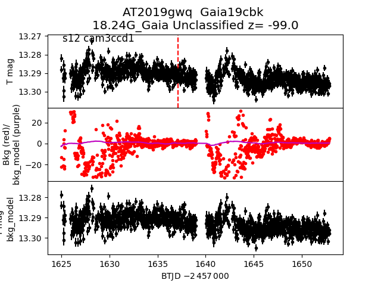
2019kwc
2019gwq
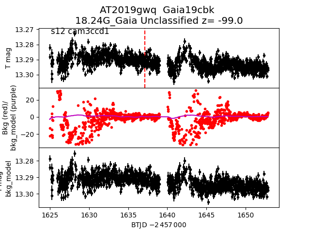
2019kwc
 2019gac
2019gac
 2019hmh
2019htm
2019hmh
2019htm
 2019gdg
2019gdg
 2019hkx
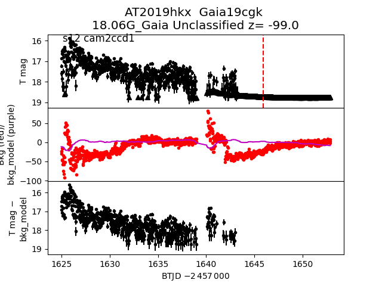
2019hzo
2019hkx
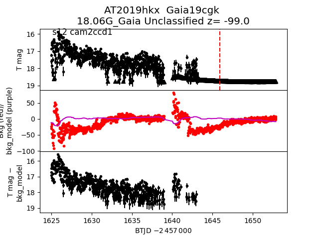
2019hzo
 2019hsq
2019hsq
 2019htx
2019hlb
2019htx
2019hlb
 2019gak
2019gak
 2019hsl
2019gyb
2019hsl
2019gyb
 2019hit
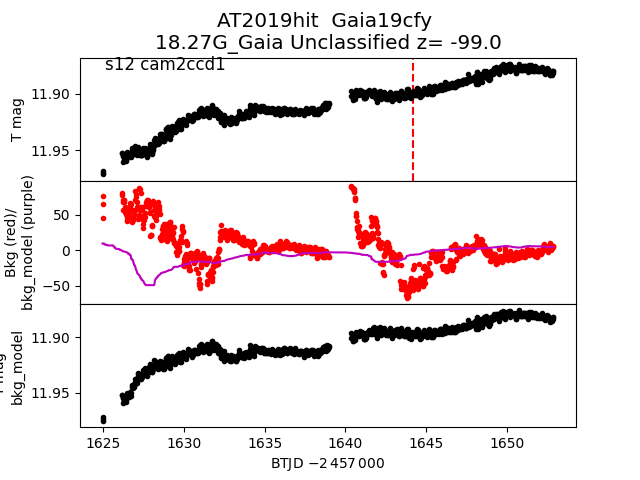
2019gvp
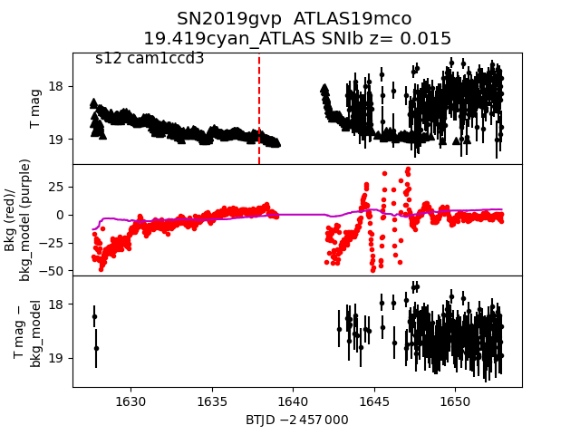
2019hpg
2019hit
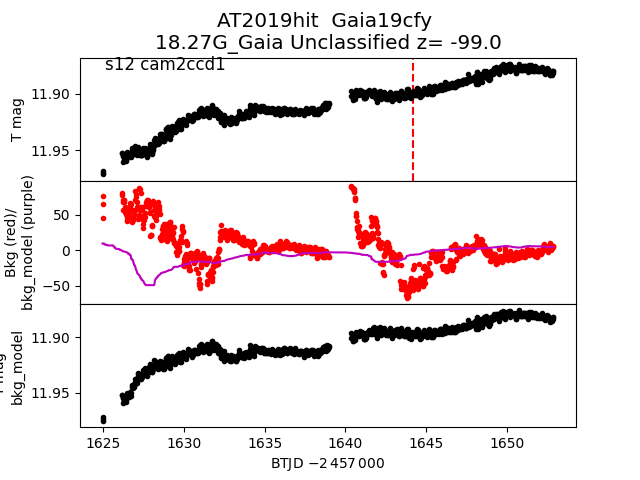
2019gvp
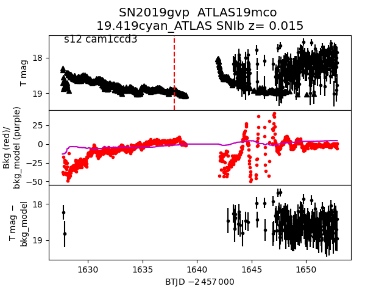
2019hpg
 2019gvc
2019gvc
 2019hrs
2019hrs
 2019ifd
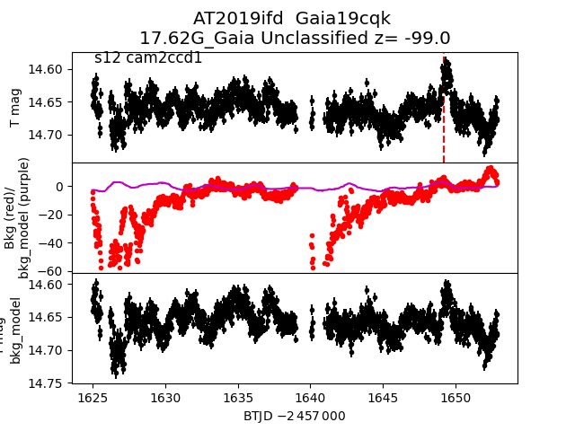
2019guh
2019ifd
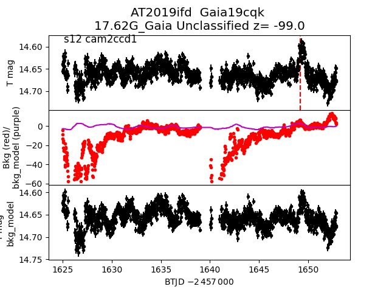
2019guh
 2019htv
2019khg
2019htv
2019khg
 2019gqv
2019gdc
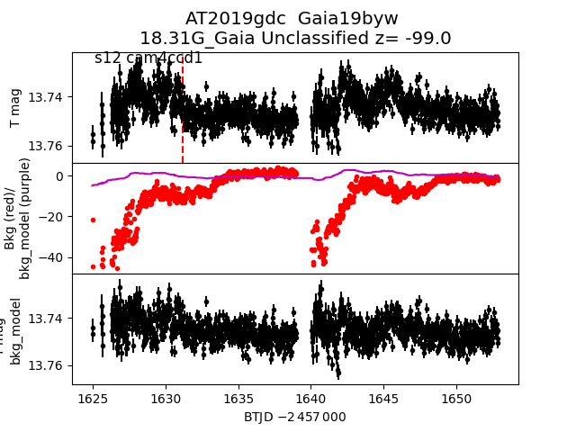
2019hcn
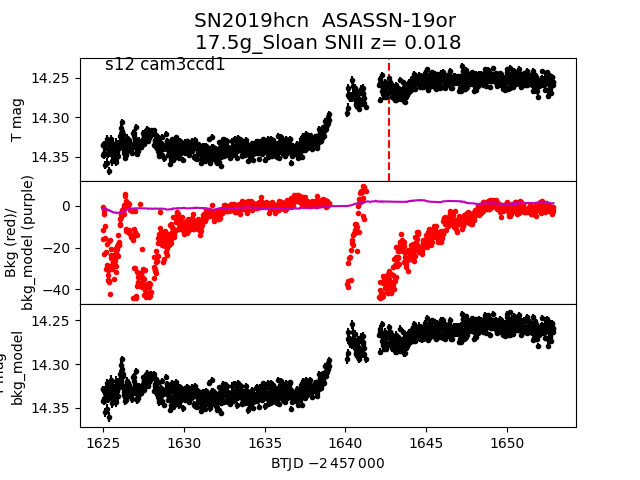
2019hsc
2019gqv
2019gdc
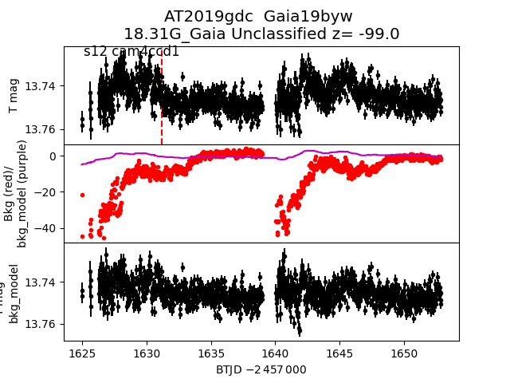
2019hcn
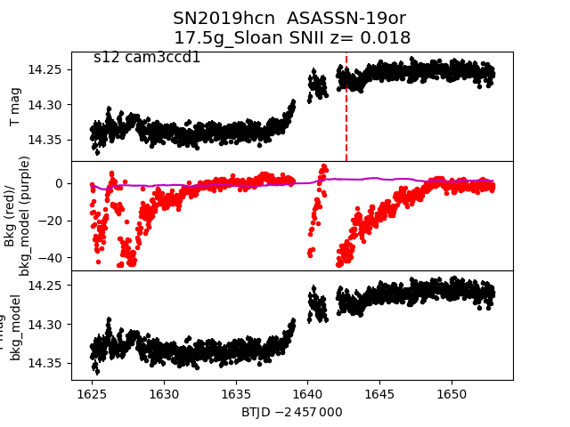
2019hsc
 2019gzu
2019gzu
 2019gdy
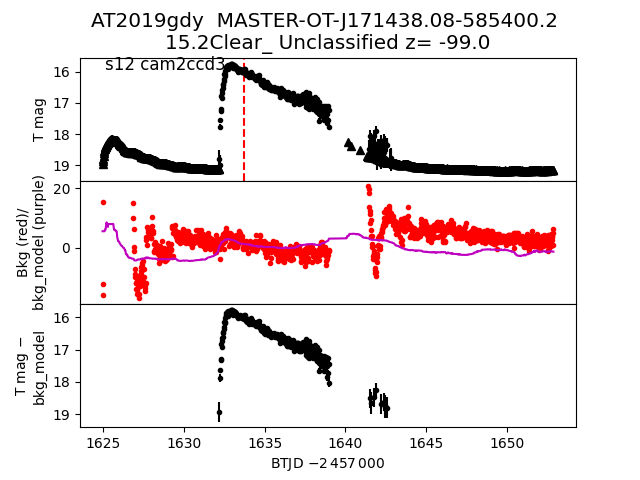
2019kqd
2019gdy
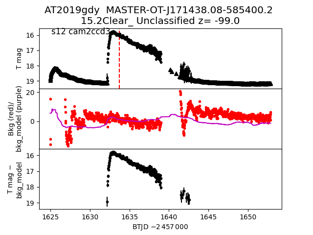
2019kqd